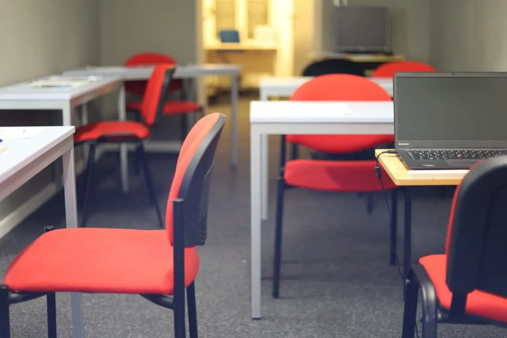

Klasse B
Prüfung auf Schaltung
- Ausbildung auf dem Schaltwagen
- Prüfung auf dem Schaltwagen
- Danach Schalt- und Automatikautos
Berlin-Wedding · Utrechter Straße 8
Persönliche Fahrausbildung für Auto und Motorrad – mit Theorieunterricht vor Ort und Begleitung bis zur Prüfung.

Was möchtest Du machen?
Wähle das Thema, das zu Deiner Situation passt. Die Anfrage ist unverbindlich und noch keine Anmeldung.
PKW-Ausbildung mit Theorie, Fahrstunden und Prüfung.
Details ansehen → 197Prüfung auf Automatik, danach auch Schaltwagen fahren.
Unterschied verstehen → AAusbildung für Klasse A und A2 laut aktueller Preisliste.
Ablauf ansehen → ASFFür Fahranfänger nach Anordnung der Führerscheinstelle.
Seminar ansehen →Orientierung von Anfang an
Unterlagen klären und persönlich in der Fahrschule anmelden.
Unterricht besuchen und mit den Prüfungsfragen üben.
Mit Vortests in der Fahrschule vorbereitet antreten.
Fahrverhalten und Grundfahraufgaben sicher beherrschen.
Überland, Autobahn und Nachtfahrt absolvieren.
Das Gelernte zeigen und die Ausbildung abschließen.
B oder B197?
Bei Klasse B wird die praktische Prüfung auf einem Schaltwagen gefahren. Bei B197 kann die Prüfung auf Automatik stattfinden – nach mindestens 10 Schaltstunden à 45 Minuten und einer 15-minütigen Testfahrt darfst Du trotzdem Schaltwagen fahren.
Klasse B
B197
Vor Ort in Wedding
Das Büro ist montags bis freitags von 09:00 bis 14:30 Uhr geöffnet. Samstags nach Terminvereinbarung.